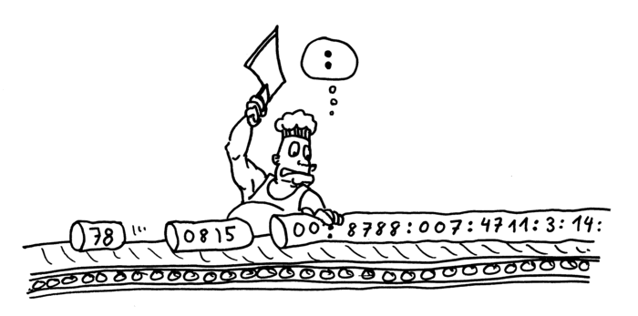

Mảng
1. Nội dung
1.1 Khái niệm
Số phần tử cố định
Kích thước một phần tử cố định
Các phần tử mảng phải cùng kiểu
Truy cập ngẫu nhiên (theo chỉ số)
1.2 Mô tả
1.2.1 Mảng một chiều

1.2.2 Mảng hai chiều

1.3 Code
int a [1000];
int b [100][100];
typedef struct MyStruct{
int value ;
MyStruct* ptr;
};
MyStruct x [10];
2. Bài tập mẫu
Bài 1: Nhập vào một mảng các số tự nhiên (có tối đa 99 phần tử), sau đó hiển thị mảng vừa nhập ra màn hình (các phần tử cách nhau bởi một khoảng trắng). Quá trình nhập sẽ dừng khi nhập vào giá trị -1.
#include#include int main() { int a[99], n = 0, i; //khai báo do{ //nhập mảng printf("Nhap phan tu thu %d: ", n + 1); scanf("%d", &a[n]); //lưu trực tiếp giá trị nhập vào a[n] if (a[n] != -1) n++; //nếu giá trị hợp lệ thì dung nạp vào mảng } while (a[n] != -1); printf("Mang vua nhap la: "); //hiển thị mảng for (i = 0; i < n; i++) printf("%d ", a[i]); getch(); //dừng màn hình để xem kết quả }
Nhập phần tử thứ 1: 1 Nhập phần tử thứ 2: 4 Nhập phần tử thứ 3: 2 Nhập phần tử thứ 4: -1 Mảng vừa nhập là: 1 4 2
Bài 2: Nhập vào một mảng gồm n (n≤ 99) số tự nhiên từ bàn phím (quá trình nhập sẽ dừng khi người sử dụng nhập vào giá trị -1) sau đó hiển thị mảng vừa nhập và giá trị nhỏ nhất của mảng ra màn hình.
#include#include int main() { int a[99], n = 0, i, min; //b1. Khai báo do{ //b2. Nhập mảng printf("Nhap phan tu thu %d: ", n + 1); scanf("%d", &a[n]); if (a[n] != -1) n++; } while (a[n] != -1); printf("Mang vua nhap la: "); min = a[0]; //b3. Tìm min & hiển thị mảng for (i = 0; i < n; i++) { printf("%d ", a[i]); if (a[i] < min) min = a[i]; } printf("\nGia tri nho nhat cua mang la: %d", min); //b4. Xuất kết quả & dừng màn hình getch(); }
Nhập phần tử thứ 1: 6 Nhập phần tử thứ 2: 5 Nhập phần tử thứ 3: 4 Nhập phần tử thứ 4: 8 Nhập phần tử thứ 4: -1 Mảng vừa nhập là: 6 5 4 8 Giá trị nhỏ nhất của mảng là: 4
3. Bài tập tự làm
Bài 1: Khởi tạo một mảng gồm n (n≤ 99) số tự nhiên sau đó tính giá trị trung bình các phần tử của mảng.
Bài 2: Khởi tạo một mảng gồm n (n ≤ 99) số thực, nhập một số thực x từ bàn phím sau đó đếm số phần tử trong mảng có giá trị x.
4. Ưu/khuyết điểm của mảng
Cách biểu diễn này rất tiện cho việc truy xuất đến các phần tử của danh sách.
Do danh sách là biến động, số phần tử trong danh sách là không biết trước. Nên ta thường phải khai báo kích thước tối đa cho mảng để dự phòng (maxlength). Điều này dẫn đến lãng phí bộ nhớ.
Các thao tác chèn một phần tử vào danh sách và xoá bỏ một phần tử khỏi danh sách được thực hiện chậm (với thời gian tuyến tính đối với kích thước danh sách)